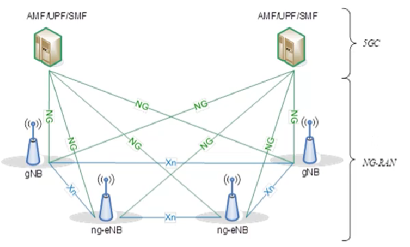
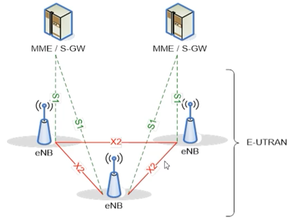
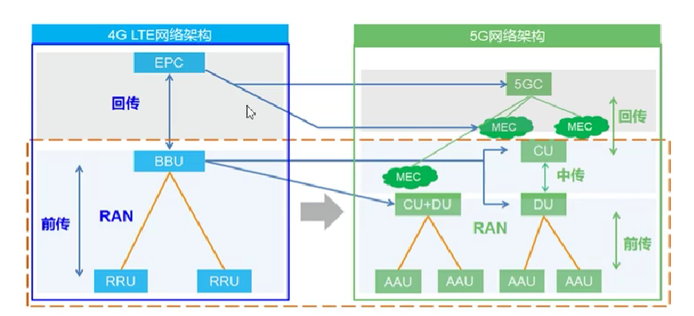
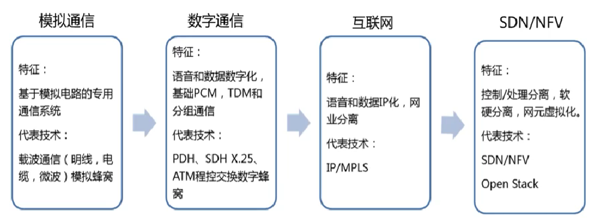
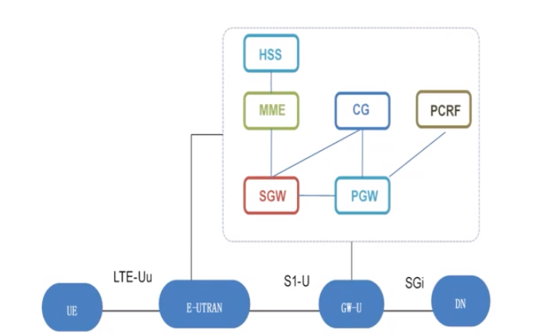
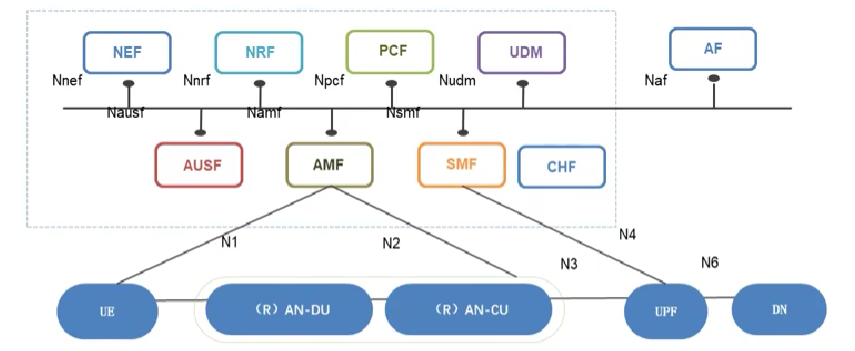
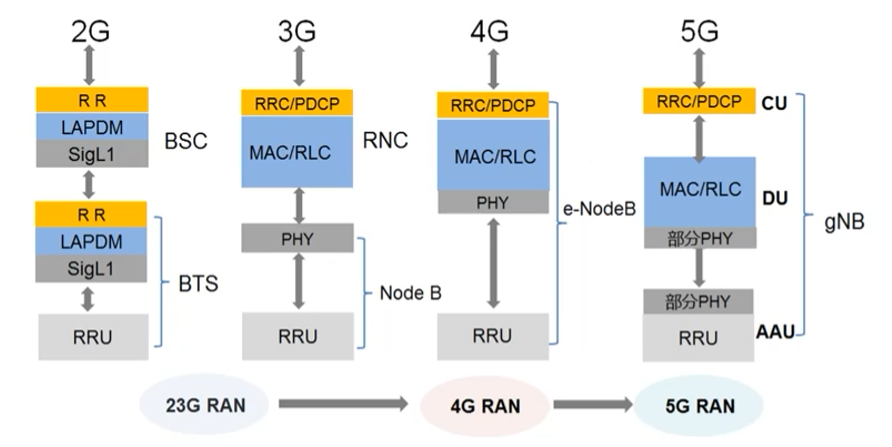

5G网络架构与组网部署
本篇是对大唐杯培训5G网络架构与组网部署1的知识梳理与简要总结。
1、学习目标
1. 掌握5G网络整体架构组成
2. 掌握主要网元功能
3. 了解网元接口关系
4. 了解5G网络组网部署策略
2、5G网络架构的演进趋势
2.1概述
5G移动通信系统包括5GC(5G Core Network, 5G核心网)和NG-RAN(Next Generation Radio Access Network, 5G无线接入网)。5G核心网与5G接入网通过NG接口连接，实现控制面与用户面功能；5G无线接入网之间通过Xn接口连接，实现控制面和用户面功能。5G移动通信系统整体架构如下：

注：gNB为5G通信基站，eNB为4G通信基站，ng-eNB为下一代无线接入网，指4G增强型基站，可以实现一部分5G基站的功能。AMF/UPF/SMF等为核心网网元，UPF主要实现用户面的功能，AMF和SMF负责控制面的功能。
4G移动通信系统包括EPC(Evolved Packet Core network, 演进分组核心网)和E-UTRAN(Evolved Universal Terrestrial Radio Access Network, 演进通用陆地无线接入网络)。演进分组核心网与演进通用陆地无线接入网络通过S1接口连接，实现控制面与用户面功能；演进通用陆地无线接入网络之间通过X2接口连接，实现控制面和用户面功能。4G移动通信系统整体架构如下所示：

注：MME/S-GW等为核心网网元，MME主要实现控制面实体，负责移动性管理（到了5G其一部分功能到了SMF），S-GW负责用户面的网关。
总的来说，5G移动通信系统整体架构与4G整体架构类似。4G与5G移动通信系统整体结构对比如下所示：RAN网络引入CU、DU，组网更灵活，利于多小区的集中控制，利于多功能的实现。MEC(Multi-access Edge Connection, 多接入边缘计算)是支撑5G系统运行的关键技术。（AAU,BBU,RRU区分与功能）

2.2 网络架构演进的核心目标
1. 实现从“互联网应用被动适应网络”向“网络主动、快速、灵活适应互联网应用”
2. 网络和资源的部署将打破行政管理体制和传统组网思路的制约，转向以IDC为核心的新格局。
3. 不同阶段核心网技术特征与代表技术如下所示：

2.3 核心网架构演进
移动通信系统核心网从3G到4G的演进特点是取消了CS域(Circuit Switch, 电路交换域)只保留PS域(Packet Switch, 分组交换域)。4G移动通信系统实现了控制和承载相分离（4G核心网-CSDN博客）。4G核心网架构如下所示：

5G核心网颠覆了4G核心网的设计思路。5G核心网基于SBA实现(Service Based Architecture, 基于服务架构)，使用NFV技术灵活重构网络功能，使用SDN技术灵活构建数据转发通道，使用切边技术实现业务保障与资源利用率最大化，完全实现CUPS(Control and User Plane Separation, 控制与用户面分离)，结合云技术全面支撑5G应用场景需求（5G 网络架构（核心网）总结）。为了应对5G网络的发展要求，基于服务的5G核心网架构如下所示：

2.4 无线接入网演进
从2G(第二代移动通信系统)开始到现在的5G(第五代移动通信系统)，无线接入网技术一直处于变化之中，无线接入网的实现方式也呈现“分合分”的表象(无线接入网)。无线接入网的发展与演进如下所示：
